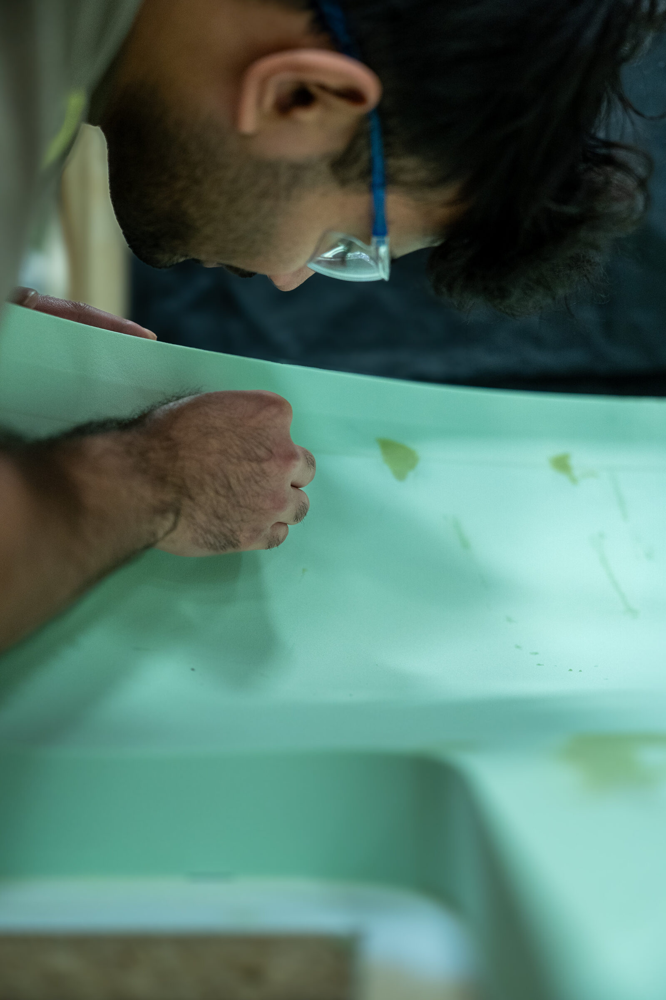
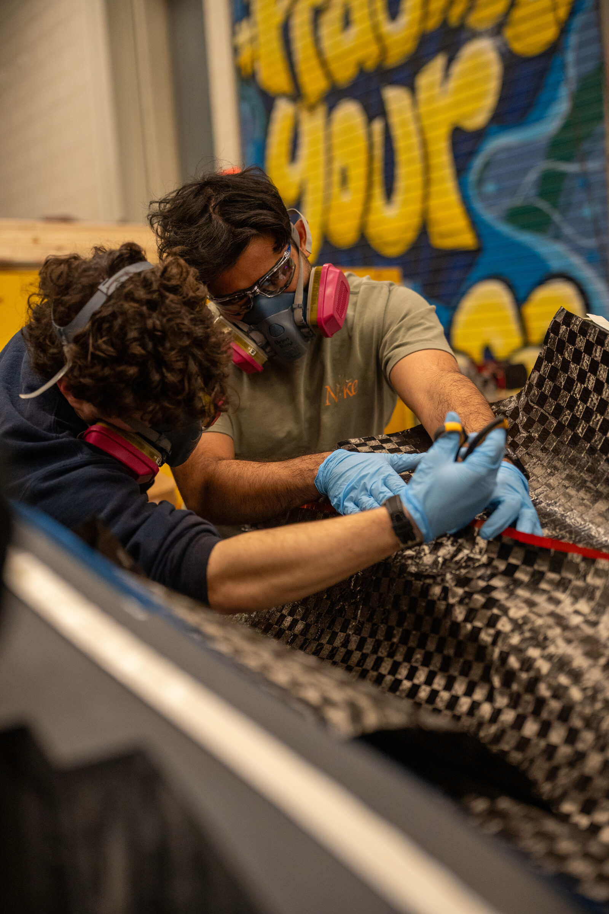

Anton Rehan Edirisinghe
← All work
Michigan Supermileage
Team · Vehicle design
Role
Mechanical Systems Engineer
Timeline
Sep 2025 – Present
Leading the team's engine dynamometer project — characterizing powertrains and building efficiency maps.
Manufactured aerodynamic surfaces, including Siemens NX molds for carbon fiber layups.

